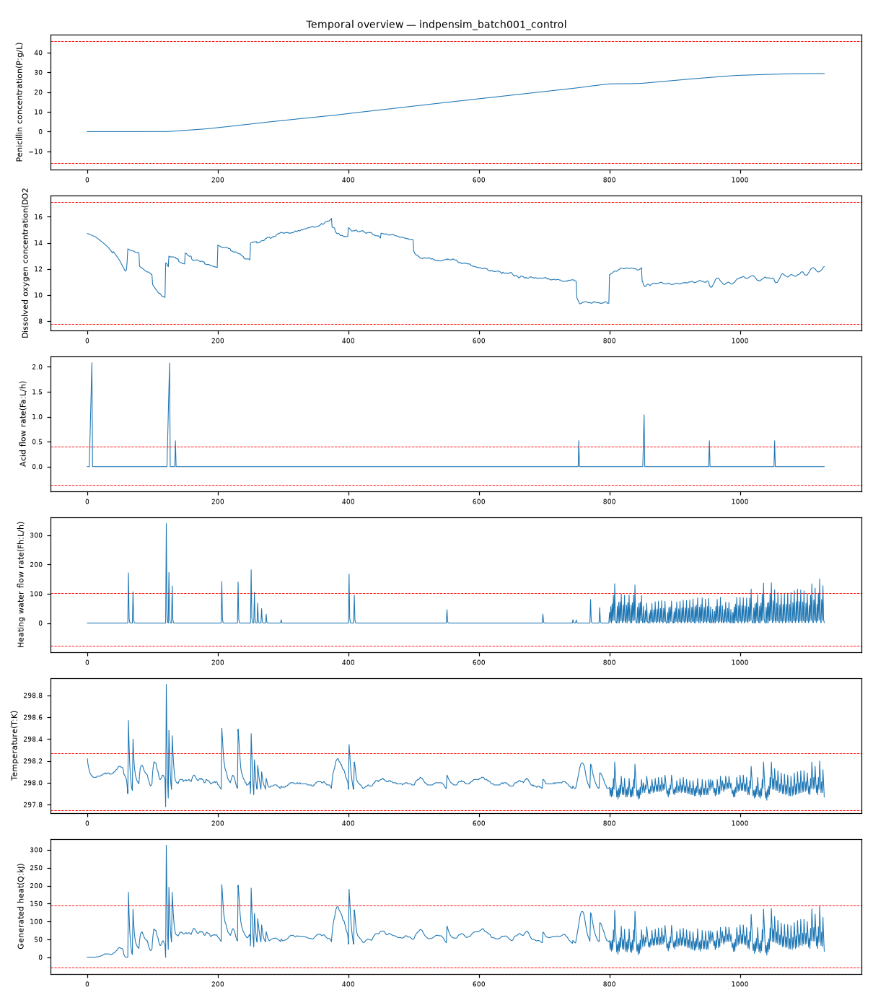

202609121135344_bench_indpensim_batch001_control · 执行模式 zcode-direct正常批次（recipe 驱动的受控批次动态，无故障）：全局 z 谱的执行器越限属批过程非平稳轨迹下的闭环调节瞬态——被控质量变量在带内、物理不变量完好、产物累积轨迹健康（Time~P r=0.994），判定为正常运行。
Acid flow rate(Fa:L/h) max|z|=16.2，超3σ占比 1.2%Heating water flow rate(Fh:L/h) max|z|=10.94，超3σ占比 2.5%Temperature(T:K) max|z|=10.23，超3σ占比 1.4%Generated heat(Q:kJ) max|z|=8.78，超3σ占比 1.2%Heating/cooling water flow rate(Fc:L/h) max|z|=6.93，超3σ占比 1.2%pH(pH:pH) max|z|=6.01，超3σ占比 1.3%强相关对：Vessel Volume(V:L) ~ Vessel Weight(Wt:Kg): r=0.997；Time (h) ~ Penicillin concentration(P:g/L): r=0.994；carbon dioxide percent in off-gas(CO2outgas:%) ~ Carbon evolution rate(CER:g/h): r=0.969；Vessel Weight(Wt:Kg) ~ Carbon evolution rate(CER:g/h): r=0.941；Aeration rate(Fg:L/h) ~ Carbon evolution rate(CER:g/h): r=0.935；Oxygen Uptake Rate(OUR:(g min^{-1})) ~ Oxygen in percent in off-gas(O2:O2 (%)): r=-0.929
| # | 假设 | 机制 | 置信 | 裁决 |
|---|---|---|---|---|
| 1 | 正常批次（受控批次动态，无故障） | normal-operation | 88% | surviving |
| 2 | 执行侧工艺偏差（同故障批签名） | ph-control-fault | 12% | eliminated |
| 3 | 温度控制故障 | cooling-disturbance | 10% | eliminated |
| 4 | 传感器/测量伪象 | sensor-drift | 8% | eliminated |
| 假设 | 机理链 | 支撑证据 | 证伪条件 |
|---|---|---|---|
| 正常批次（受控批次动态，无故障） | 批轨迹非平稳 → 全局 z 谱在执行器 corrective 脉冲处越限（brief：Fa 16.2σ/Fh 10.94σ，超3σ占比仅 1.2-2.5%）——方法学伪象而非过程故障 被控量与质量变量在带内（brief：pH 最大 6.01σ 且 Substrate concentration 未入异常列谱 top-6）——调节结果正常 生产目标达成（brief：Time (h)~Penicillin concentration r=0.994——产物随批时稳定累积） 物理不变量完好（brief：V~Wt r=0.997、CO2outgas~CER r=0.969）——测量与过程结构可信 | L3 统计：主导异常全部为执行器瞬态（Fa 16.2 / Fh 10.94 / Fc 6.93），超3σ占比 1.2-2.5%——短时 corrective 脉冲特征 L3 统计：被控质量变量健康——底物浓度未入 top-6 异常列谱，pH 峰值 6.01 处于调节带 L3 统计：产物轨迹 Time~P r=0.994 单调累积——批次生产目标正常达成 L3 统计：物理/代谢不变量完好：V~Wt r=0.997（守恒）、CO2outgas~CER r=0.969（呼吸一致）、Aeration~CER r=0.935（供气-代谢联动） L4 视觉：执行器通道为孤立脉冲簇而非持续平台；温度/产物通道呈平滑批轨迹（fig_temporal_overview.png） | 若被控质量变量（底物/产物轨迹）出现带外偏离或累积中断，正常判定推翻 若多执行器越限与被控量出带同时出现（工艺偏差签名），本假设复活 |
| 执行侧工艺偏差（同故障批签名） | 工艺偏差要求多执行器同步持续越限且被控量出带 | L3 统计：本批越限为孤立脉冲（占比 ≤2.5%），底物浓度未入异常列谱，产物轨迹健康（r=0.994） | 若脉冲密度持续上升且 pH 带宽扩大，本假设复活 |
| 温度控制故障 | 温控故障应表现罐温出带与热平衡破坏 | L3 统计：Temperature~Generated heat r=0.996 热耦合结构完好，罐温围绕设定轨迹波动 | 若罐温偏离设定轨迹且 T~Q 耦合断裂，本假设复活 |
| 传感器/测量伪象 | 测量伪象无法保持物理不变量 | L3 统计：V~Wt r=0.997 守恒、CO2outgas~CER r=0.969 代谢一致、OUR~O2 -0.929 呼吸物理 | 若离线校准发现执行器流量计偏差，本假设复活 |
| 维度 | 得分（/10） |
|---|---|
| data_quality_awareness | 9 |
| variable_classification | 9 |
| time_alignment_and_sorting | 9 |
| visualization_quality | 9 |
| evidence_based_conclusions | 9 |
| correlation_vs_causation | 9 |
| uncertainty_disclosure | 9 |
| report_quality | 9 |
| no_over_claiming | 9 |
| completeness | 9 |
Step 0 setup（setup.mjs）→ Step 1 inspect（inspect.mjs）→ Step 2 本体（context-builder 角色）→ Step 3 统计（stats 包 + 驱动单变量/相关分析）→ Step 3.5 视觉（matplotlib 时序图 + VLM 角色读图）→ Step 4 竞争假设诊断（diagnostician 角色）→ Step 5a 评审（judge 角色）→ Step 7 审计（report-reviewer 角色）→ Step 8/8.5 HTML 与审校。统计引擎：stats-package。

judge 90/100（pass）；审计 ENDORSED：正常判定建立在结构证据（被控量在带+产物累积+三类不变量）而非仅统计阈值上；对批过程非平稳性的方法学声明诚实显式；无过度报警。
| 变量 | max|z| | 超3σ占比 |
|---|---|---|
| Acid flow rate(Fa:L/h) | 16.2 | 1.20% |
| Heating water flow rate(Fh:L/h) | 10.94 | 2.50% |
| Temperature(T:K) | 10.23 | 1.40% |
| Generated heat(Q:kJ) | 8.78 | 1.20% |
| Heating/cooling water flow rate(Fc:L/h) | 6.93 | 1.20% |
| pH(pH:pH) | 6.01 | 1.30% |
强相关对（经反假相关与多重检验校验）：Vessel Volume(V:L) ~ Vessel Weight(Wt:Kg): r=0.997；Time (h) ~ Penicillin concentration(P:g/L): r=0.994；carbon dioxide percent in off-gas(CO2outgas:%) ~ Carbon evolution rate(CER:g/h): r=0.969；Vessel Weight(Wt:Kg) ~ Carbon evolution rate(CER:g/h): r=0.941；Aeration rate(Fg:L/h) ~ Carbon evolution rate(CER:g/h): r=0.935；Oxygen Uptake Rate(OUR:(g min^{-1})) ~ Oxygen in percent in off-gas(O2:O2 (%)): r=-0.929
18 项必需产物：input_manifest / user_context / run_config / ontology / schema / feature_summary / analysis_parameter_selection / scenario_classification / anomaly_report / validate_report / data_analysis_conclusion / plot_manifest / visual_analysis / image_captions / diagnosis / evidence / confidence / reasoning_chain / judge_feedback / report.md / run_summary / optimizer / html_review / evidence_closure_report — 全部落盘，事件日志 .pipeline_events.jsonl 经 pipeline-log-check 校验。
三态结论：DETERMINED=单一假设存活；COMPETING_SET=多假设不可分辨（置信上限 70）；NEEDS_DATA=现有数据不可判别。CDR=Top-1 且 DETERMINED（FDDBenchmark 口径）。证据等级 L1 直接测量 / L3 统计 / L4 视觉 / L5 本体机理。